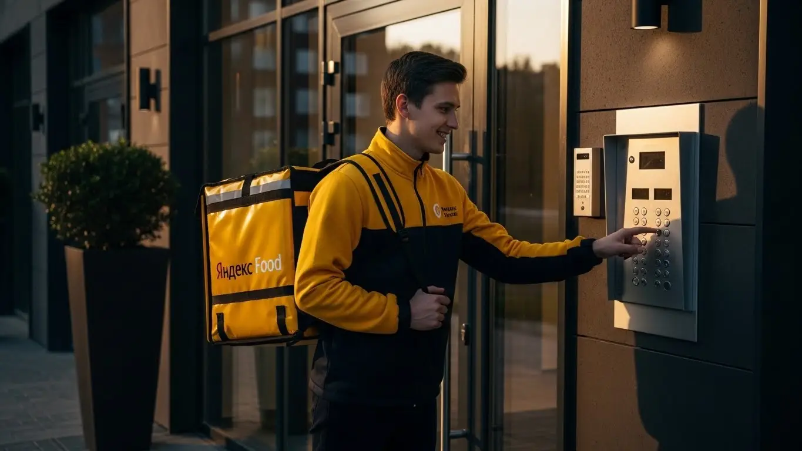
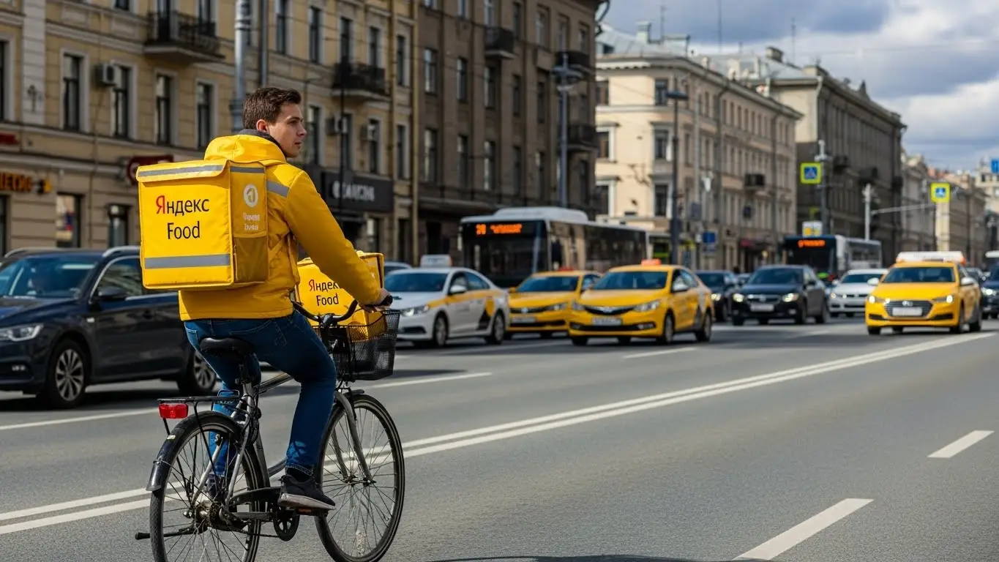

Работа курьером Яндекс Еда в Раменском 2025-2026: доход, условия

- Работа курьером Яндекс Еды в Раменском: для кого эта вакансия и что вы получите
- Сколько вы будете зарабатывать курьером в Раменском: калькулятор дохода и разбор выплат
- Реальный заработок курьера в Раменском: смены и месячный доход
- График работы и форматы занятости
- Требования к кандидату и документы
- Самозанятость, налоги и юридическая чистота
- Пошаговое оформление и первый выход на линию в Раменском
- Пешком, на вело или на авто: что выгоднее в Раменском
- Районы, маршруты и «топовые» зоны заказов в Раменском
- Безопасность, страховка, штрафы и оплата простоя
- Плюсы и возможные минусы работы курьером в Раменском
- Реальные истории и отзывы курьеров из Раменского
- Ответы на главные вопросы о работе курьером Яндекс Еды в Раменском
- Короткие ответы на главные вопросы
- Итоги и ваш следующий шаг
Все города
Думаешь, работа курьером Яндекс Еда в Раменском — это лёгкие деньги и свободный график, как в рекламе? А что, если в реальности это будут копейки, «убитый» на наших дорогах велосипед и вечные пробки на Чугунова или у станции? Если ты ищешь честный ответ, а не очередной рекламный буклет, то попал по адресу. Здесь не будет общих фраз — только честный разбор работы курьером в нашем с тобой городе, Раменском.
Поверь, 90% новичков «сливаются» в первый же месяц, потому что никто им не объяснил «внутрянку». Доход — это не просто цифра в приложении, а то, что останется после вычета расходов, налога самозанятого и амортизации. Рейтинг и приоритет — это не просто оценки, а то, почему система даёт жирный заказ не тебе, а парню за углом. Не зная, где в Раменском новостройки с вечным поиском подъезда, а где частный сектор Холодово, куда лучше не соваться в час пик, ты будешь терять время и деньги.
Здесь мы без рекламной шелухи разберём всё по косточкам. Посчитаем, сколько чистыми ты сможешь заработать в Раменском пешком, на велосипеде или авто. Выясним, в каких районах — от Центра до Залинейного — самый высокий спрос и короткие доставки. Если же тебе нужна только краткая сводка условий и форма заявки, то вся официальная информация про работу курьером Яндекс Еда в Раменском собрана на специальной странице. Здесь же я покажу на примерах, как погода и сезоны влияют на доход, расскажу, за что реально штрафуют и как этого избежать, и сравним, что выгоднее — возить заказы из «Вкусно — и точка» или таскать пакеты из Лавки.
Меня зовут Алексей. Я не первый год в этой теме: сам и педали крутил, и баранку по Раменскому, а сейчас держу свой небольшой таксопарк-партнёр. Я знаю этот город как свои пять пальцев — от каждого лежачего полицейского до самого глухого двора. Так что забудь про обещания золотых гор. Сейчас я разложу тебе всё по полочкам, как есть. Давай по порядку.
Прежде чем нырять в детали, давай быстро пробежимся по главным моментам в формате короткого гида по статье.
Что ты точно узнаешь из этого разбора
В этой статье ты ТОЧНО узнаешь:
- Сколько чистыми можно заработать в Раменском за смену и за месяц, работая пешком, на вело или авто?
- В каких районах Раменского — от Центра до Холодово — больше всего заказов и как ловить «фиолетовые зоны» с повышенной оплатой?
- За что реально могут снизить рейтинг или оштрафовать и как этого избежать, чтобы не терять заказы?
- Что выгоднее выбрать для Раменского — пешую доставку, велосипед или автомобиль — с учётом пробок и расстояний?
- Как за 10 минут оформить самозанятость через телефон и сколько на самом деле придётся платить налогов?
- Как правильно планировать слоты в «Яндекс Про», чтобы не сидеть без заказов и получать бонусы за активность?
А если тебе некогда читать всю статью — переходи сразу к заключению, где ты найдёшь короткие ответы на все эти вопросы и указания, в каких разделах искать подробности.
А чтобы было ещё нагляднее, вот ключевые цифры по работе в Раменском в одной картинке.
Работа курьером в Раменском: ключевые цифры
Работа курьером Яндекс Еды в Раменском: для кого эта вакансия и что вы получите
Давай начистоту: работа курьером в сервисах вроде Яндекс Еды или Доставки — это не для всех, но для многих отличный вариант. В Раменском, где жизнь кипит, но не всегда есть вакансии с гибким графиком, доставка становится настоящим выходом. Это возможность получить живые деньги здесь и сейчас, без месяцев собеседований и диплома престижного вуза.
Я сам начинал с баранки, а теперь у меня свой небольшой парк, и я вижу, кто приходит в эту сферу и почему остаётся. Это не просто «беготня с сумкой», как думают некоторые. Если подойти с умом, это стабильный и понятный источник дохода, который ты контролируешь сам. Главное — понять, подходит ли тебе такой формат.
Кому подойдёт эта работа в Раменском
Эта работа, как конструктор, — каждый собирает её под себя. В первую очередь, это идеальная подработка для студентов местных колледжей и институтов. Вместо того чтобы просить у родителей, можно после пар выйти на 3–4 часа и заработать на свои расходы. Свободный график позволяет легко совмещать доставку с учёбой.
Также это отличный старт для тех, у кого нет опыта работы. Никто не будет требовать от тебя резюме на пять страниц. Нужен только смартфон, желание двигаться и умение ориентироваться в городе. Многие приходят сюда за подработкой, имея основную работу. Например, отработал смену на заводе, переоделся и поехал катать заказы по вечернему Раменскому — плюс 20-30 тысяч к основной зарплате лишними не будут. И, конечно, это подходит тем, кому деньги нужны быстро — ежедневные выплаты приходят прямо на карту.
Главные преимущества для жителей районов Холодово, Залинейный, МКР-10
Самый большой плюс для жителей Раменского — возможность работать буквально у себя под окнами. Тебе не нужно тратить час-полтора на дорогу до Москвы или другого конца города. Ты просто выходишь из дома, включаешь приложение «Яндекс Про» и начинаешь получать заказы в своём районе.
Живёшь в Холодово? Отлично, здесь полно многоэтажек и, соответственно, заказов из ближайших пиццерий и магазинов. Обитаешь в Залинейном районе или в 10-м микрорайоне? Тоже без проблем — там всегда есть спрос. Ты сам выбираешь на карте зону, в которой хочешь работать. Это экономит не только время, но и силы, и деньги на проезд. Ты работаешь на знакомых улицах, знаешь все короткие пути и где лучше срезать.
Краткое обещание по доходу и условиям
Теперь о главном — о деньгах. Сколько реально можно заработать курьером в Раменском? Цифры зависят от тебя: от твоего графика, скорости и способа передвижения. Если говорить о средних показателях, то активный курьер за смену 8-10 часов может делать 2500–4000 рублей. При полной занятости это выливается в 50 000–85 000 рублей в месяц. Если нужна подработка на пару часов в день, то можно рассчитывать на 1000–1500 рублей за выход.
Ключевые условия работы просты и прозрачны: свободный график, который ты сам составляешь в приложении, и ежедневные выплаты на твою банковскую карту. Для старта не нужен опыт или специальное образование. Всё, что потребуется, — это желание работать и смартфон. Оформление официальное — через статус самозанятого, что даёт тебе легальный доход и избавляет от головной боли с бумагами.
В качестве примера: у меня работает парень, живёт в районе ипподрома. Начинал как пеший курьер, просто чтобы подзаработать на выходных. За пару месяцев освоился, понял, где и когда больше заказов, пересел на велосипед. Сейчас работает почти каждый день по 6-7 часов, спокойно делает 60-70 тысяч в месяц, работая в радиусе нескольких километров от своего дома. Говорит, что о работе в офисе даже не думает.
В общем, работа курьером в Яндекс Еде в Раменском — это реальная возможность зарабатывать, не завися от начальников и жёсткого расписания. Она идеально подходит как для подработки, так и для полноценного заработка, особенно если ты ценишь свободу и хочешь видеть результат своего труда каждый день. Мой совет: начни со своего района, так ты быстрее втянешься и поймёшь всю механику.
Сколько вы будете зарабатывать курьером в Раменском: калькулятор дохода и разбор выплат
Многих новичков волнует вопрос: «Сколько платят за один заказ?». Но это не совсем правильная постановка вопроса. Твой итоговый доход — это не просто ставка за доставку, а сумма нескольких составляющих. Система в «Яндекс Про» устроена так, чтобы поощрять активных и быстрых курьеров, особенно в часы пик.
Чтобы не быть голословным, давай разберём по косточкам, из чего складывается твоя зарплата, и как ты можешь прикинуть свой будущий заработок. Это поможет тебе понять, на какие цифры ориентироваться и как можно влиять на свой доход.
Из чего складывается доход курьера
Твой заработок за смену — это сумма нескольких переменных. Во-первых, базовая оплата за каждый выполненный заказ, которая включает подачу в ресторан или магазин и доставку до клиента. Во-вторых, доплата за расстояние: чем дальше везти заказ, тем больше денег ты получишь. Система рассчитывает оптимальный маршрут, и каждый километр этого пути оплачивается.
Кроме того, на доход сильно влияют повышающие коэффициенты. В часы пик (обед, ужин), в плохую погоду или в зонах с высоким спросом на карте появляются «горящие» зоны. Заказы оттуда оплачиваются дороже — в 1.5, 2, а то и в 3 раза. Также есть персональные бонусы за выполнение определённого числа заказов в день или неделю.
Не стоит забывать и про чаевые — благодарные клиенты часто оставляют их прямо в приложении, и вся эта сумма идёт тебе в карман. А главное — сервис страхует тебя от простоев: если заказов мало, может включиться оплата за время нахождения на слоте, так что ты не останешься с нулём.
Как пользоваться калькулятором дохода
Чтобы ты мог заранее прикинуть, сколько сможешь заработать, на сайте есть специальный калькулятор. Пользоваться им проще простого. Сначала выбери свой город — Раменское. Затем укажи, как планируешь доставлять: пешком, на велосипеде или на своём автомобиле. От этого выбора зависит средняя скорость и количество заказов, которые ты сможешь выполнить.
Далее ты двигаешь ползунки, указывая, сколько часов в день и сколько дней в неделю готов работать — например, 4 часа в день, 5 дней в неделю. На основе этих данных и средней статистики по городу калькулятор моментально покажет тебе примерный доход за день и за месяц. Это, конечно, прогноз, но он довольно точно отражает реальные цифры, на которые можно ориентироваться.
Прикиньте свой возможный доход в Раменском
Ваш примерный доход в месяц:
64 000 ₽
Примерно 3 200 ₽ в день
Расчет является примерным и основан на средней ставке 400 ₽/час для г. Раменское. Реальный доход зависит от спроса, бонусов и вашего рейтинга.
Этот калькулятор даст хорошее представление о цифрах. А если хочешь увидеть полную раскладку по условиям, требованиям и заполнить анкету, загляни на страницу про работу курьером Яндекс Еда в твоём городе — там собрана вся официальная информация.
Примеры расчёта для пешего, вело- и авто‑курьера в Раменском
Давай посмотрим на конкретных примерах, как это работает в нашем городе.
- Пеший курьер. Допустим, ты студент и тебе нужна подработка на 4 часа вечером в центре, в районе улиц Советская и Красноармейская, где много кафе. За это время ты успеешь сделать 6–8 заказов. Средний чек за заказ с учётом небольшого расстояния — 150–200 рублей. Плюс вечером почти всегда есть повышающий коэффициент. Итог за смену: около 1200–1800 рублей.
- Велокурьер. Ты работаешь полный день в выходной, 8 часов, и катаешься между спальными районами, например, из Холодово в Залинейный. На велосипеде ты быстрее, заказов больше — 15–20 за смену. Расстояния тоже больше, а значит, и оплата выше. С учётом бонусов за количество заказов твой дневной заработок может составить 3500–4500 рублей.
- Авто-курьер. У тебя есть своя машина, и ты готов работать по всему городу и захватывать пригород (Дергаево, Клишева). Ты можешь брать дальние и дорогие заказы, особенно в плохую погоду, когда пешие и велокурьеры менее активны. За 8–10 часов на линии ты можешь заработать 4500–7000 рублей, так как берёшь самые «сливки» — мультизаказы (несколько доставок в одном районе) и заказы из гипермаркетов.
Один из моих водителей-курьеров, который работает на авто, поначалу брал все заказы подряд. Потом смекнул, что самые выгодные — это вечерние доставки в плохую погоду из ТЦ «Солнечный Рай» в частный сектор. Там и расстояние приличное, и коэффициенты высокие, и чаевые люди оставляют чаще. За одну такую 3-часовую вылазку в дождь он делает столько же, сколько другой курьер за 6-7 часов днём.
В итоге, твой заработок в Яндекс Еде — это не фиксированная ставка, а результат твоей стратегии. Понимая, из чего он складывается, ты можешь сам на него влиять: выбирать правильное время, зоны и способ доставки. Мой совет: не бойся экспериментировать и смотри на карту спроса в приложении «Яндекс Про» — это твой главный инструмент для увеличения дохода.
Реальный заработок курьера в Раменском: смены и месячный доход
Диапазон дохода для подработки и полной занятости
Давай сразу к главному — к деньгам. В Раменском, как и в других городах, твой заработок курьером напрямую зависит от того, сколько времени ты готов уделять доставкам и на чём передвигаешься. Цифры я даю чистыми, уже после вычета комиссии сервиса, но до уплаты налога как самозанятый. Это реальные суммы, которые парни у меня в парке и знакомые курьеры приносят домой.
Если для тебя это подработка, чтобы закрыть кредит или просто иметь карманные деньги, выходя на 2–4 часа в день, расклад такой. Пеший курьер или велокурьер за вечер может сделать 800–1500 рублей. В месяц это выливается в 15 000–30 000 рублей, если работать регулярно. Курьер на своем авто за то же время заработает больше, около 1200–2500 рублей за смену, что в месяц даёт уже 25 000–50 000 рублей. Машина решает, особенно когда заказы из Яндекс Еды или Маркета идут в новые районы или на окраины.
При полной занятости, когда ты работаешь как на основной работе по 8–10 часов, цифры совсем другие. Пеший или велокурьер стабильно делает 2500–4000 рублей в день. В месяц выходит 50 000–80 000 рублей. А вот водитель-курьер на личном автомобиле при полной загрузке может зарабатывать и 4000–6000 рублей в день, что в итоге даёт 80 000–120 000 рублей в месяц. Конечно, из этой суммы нужно вычесть расходы на бензин, но даже с учётом этого зарплата получается очень достойная для нашего города.
Как район, время суток и погода влияют на доход
Запомни простое правило: твой доход растёт, когда другим людям лень выходить из дома. Самые «хлебные» часы — это обеденное время с 12:00 до 15:00 и вечерний пик с 18:00 до 22:00. В это время все хотят есть, а готовить не хотят. В выходные, особенно в субботу вечером, спрос максимальный. В приложении Яндекс Про такие зоны подсвечиваются фиолетовым — это значит, действует повышенный коэффициент, и за каждый заказ ты получишь больше.
Погода — твой лучший друг. Как только начинается дождь, снегопад или, наоборот, сильная жара, количество заказов взлетает, а вместе с ними и коэффициенты. Многие курьеры сидят дома, а те, кто на линии, снимают все сливки. Клиенты в такую погоду тоже щедрее на чаевые — это приятный бонус к основному доходу, ведь они понимают, каково это — мокнуть под дождём ради их ужина. В Раменском это особенно заметно: чуть погода испортилась — центр на Советской и новые ЖК на Крымской сразу «загораются» высоким спросом.
Что касается районов, то днём больше заказов в центре, где много офисов и кафе. Вечером же спрос смещается в спальные районы: Холодово, Дергаево, залинейная часть города. Умный курьер не стоит на месте, а перемещается вслед за спросом. Видишь в приложении, что где-то горит «фиолетовая» зона — двигай туда, не теряй времени.
Советы по увеличению заработка от опытных курьеров
Чтобы зарабатывать больше, не обязательно работать сутками. Нужно работать с головой. Во-первых, всегда планируй свои выходы. Заранее смотри в приложении «Яндекс Про» и бронируй плановые слоты в зонах с высоким спросом. За такие слоты часто идёт дополнительный бонус, и у тебя будет гарантия минимального дохода, даже если заказов будет мало.
Во-вторых, не брезгуй короткими заказами в зонах с высоким коэффициентом. Иногда лучше сделать три коротких доставки по соседним домам с кэфом х1.5, чем тащиться с одним заказом через весь город по стандартному тарифу. Приложение само подсказывает такие «горячие» точки, твоя задача — вовремя там оказаться.
И ещё один совет: сочетай форматы. Если у тебя есть и велосипед, и машина, используй их по ситуации. В час пик, когда центр Раменского стоит в пробках, велосипед будет быстрее и выгоднее. А для дальних заказов в Залинейный район или в сторону Жуковского лучше взять машину. Гибкость — твой ключ к хорошему заработку без лишних нервов и переработок.
Вот недавний пример из практики. Парень-водитель на старенькой «Нексии» решил поработать в прошлую субботу, когда лил сильный дождь. Он не поехал в центр, где и так тесно, а сразу занял позицию у ТЦ «Солнечный» и работал по новым микрорайонам. За 6 часов он сделал почти 5000 рублей, потому что коэффициент был высоким, а клиенты почти все оставляли чаевые. Он просто понял, где будет спрос, и оказался там в нужное время.
Сравнение дохода в Раменском по типам занятости
| Тип курьера | Подработка (2–4 часа/день) | Полная занятость (8–10 часов/день) |
|---|---|---|
| Пеший / Велокурьер | 15 000 – 30 000 ₽/мес. | 50 000 – 80 000 ₽/мес. |
| Водитель-курьер (на авто) | 25 000 – 50 000 ₽/мес. | 80 000 – 120 000 ₽/мес. (до вычета топлива) |
В итоге, твой заработок в Раменском — это не лотерея, а результат твоих действий. Выбирай правильное время, место и транспорт, и тогда доход от работы курьером будет стабильным и предсказуемым. Главный совет — не сиди на месте в ожидании чуда, а анализируй карту спроса в приложении Яндекс Про и будь там, где есть деньги.
График работы и форматы занятости
Подработка после учёбы или основной работы
Свободный график — это, пожалуй, главный плюс этой работы. Ты сам себе начальник и решаешь, когда выходить на линию. Такие условия идеально подходят тем, кто ищет подработку, а не основную занятость. Вариантов, как это встроить в свою жизнь, масса.
Например, у меня есть знакомый студент из Раменского дорожно-строительного техникума. Он выходит на смены 3-4 раза в неделю после пар, примерно с 17:00 до 21:00. Катается на велосипеде по центру и ближайшим микрорайонам. За такой вечер у него выходит 1000–1400 рублей. В месяц набегает около 20 000 рублей — отличная прибавка к стипендии, которой хватает и на развлечения, и чтобы родителям не мешать.

Другой пример — мужчина, который днём работает на заводе. У него сменный график. В свои выходные он берёт 6-8-часовые смены на машине, а иногда выходит и после работы на 3-4 часа, если есть силы. Он работает в основном по крупным заказам из гипермаркетов в рамках Яндекс Доставки и по дальним маршрутам. За месяц такая подработка приносит ему дополнительные 35 000–40 000 рублей, которые он откладывает на отпуск с семьёй. Как видишь, совмещать более чем реально.
Полная занятость: как выглядит типичный день курьера
Если ты рассматриваешь работу курьером как основную, твой день будет более структурированным, но всё равно гибким. Типичный день курьера на полной занятости в Раменском начинается не в 7 утра, а ближе к 10:00–11:00. Утром заказов мало, нет смысла тратить время. Сначала он выходит в район с большим количеством кафе — это центр, улицы Советская, Красноармейская, Гурьева.
С 12:00 до 15:00 идёт первая волна заказов — обеды для офисных работников. В это время работаешь почти без остановок. После 15:00 наступает затишье. Это хорошее время, чтобы перекусить самому, заправиться или просто отдохнуть. Опытные курьеры не тратят это время впустую, а перемещаются в сторону крупных жилых массивов, например, в район Холодово, готовясь к вечернему пику.
Вечерний пик начинается около 18:00 и длится до 21:00–22:00. Это самое прибыльное время. Заказы идут один за другим: ужины из ресторанов по линии Яндекс Еды, продукты из магазинов и Яндекс Лавки. После 22:00 спрос падает, и можно либо завершать смену, либо выполнять редкие ночные заказы, если есть желание. Такой ритм позволяет за 8–10 часов на линии заработать дневную норму и при этом не вымотаться в ноль.
Как планировать слоты и выходы через приложение «Яндекс Про»
Приложение «Яндекс Про» — твой главный рабочий инструмент. В нём ты не только получаешь заказы, но и планируешь свой график. Есть два основных режима работы: свободный выход и плановые слоты. В первом случае ты просто нажимаешь кнопку «На линию» в любой момент и начинаешь работать. Это удобно, но в часы низкого спроса можно просидеть без заказов.
Плановые слоты — это когда ты заранее бронируешь время и район, в котором будешь работать. Например, выбираешь слот с 18:00 до 22:00 в зоне с высоким спросом. Плюсов у такого подхода несколько. Во-первых, сервис часто предлагает бонусы за выполнение определённого количества заказов в слоте. Во-вторых, у тебя будет гарантия минимального дохода за это время, даже если заказов будет мало.
Очень важно не опаздывать на забронированные слоты и не отменять их в последний момент. Это влияет на твой рейтинг в системе. Чем выше рейтинг, тем больше у тебя приоритет при распределении заказов. Поэтому, если хочешь иметь стабильный поток хороших заказов, относись к планированию серьёзно. Открывай приложение, смотри карту спроса на завтра, выбирай самые «жирные» слоты и бронируй их. Это дисциплинирует и напрямую влияет на твой итоговый доход.
У меня в таксопарке есть водитель, который раньше работал в доставке. Он выработал для себя чёткую схему. Каждое воскресенье вечером он открывал «Яндекс Про» и планировал всю следующую неделю: бронировал самые выгодные вечерние и обеденные слоты. Он точно знал, сколько часов отработает и какой минимальный доход получит. Такой подход позволил ему за полгода накопить на первый взнос по ипотеке, работая курьером в Яндекс Доставке.
В общем, свободный график — это не анархия, а возможность подстроить условия работы под себя. Используй инструменты, которые даёт приложение Яндекс Про, планируй своё время и выходи на линию тогда, когда это максимально выгодно. Главный совет — в первые недели пробуй разные слоты и районы, чтобы понять, какие из них приносят лучший доход именно для тебя в Раменском.
Требования к кандидату и документы
Многих новичков пугает этап с документами и требованиями — кажется, что сейчас начнётся бюрократия, как на заводе. На деле всё гораздо проще. Система создана так, чтобы ты мог как можно быстрее выйти на линию и начать зарабатывать, а не бегать по кабинетам. Главное — быть совершеннолетним, иметь базовый пакет документов и желание работать. Всё остальное — дело техники.
Условия работы минимальны и понятны. Никто не будет требовать диплом о высшем образовании или справку о спортивных разрядах. Важно, чтобы ты был ответственным, мог ориентироваться в городе и имел под рукой смартфон. Если с этим порядок, считай, полдела сделано.
Из практики: был у меня парень, студент из Раменского, 19 лет. Он думал, что для оформления нужна целая кипа бумаг, как его отцу на работу, и очень переживал, что застрянет на этом этапе. Я объяснил, что нужен только паспорт, ИНН и банковская карта. Он нашёл свой ИНН на сайте налоговой за две минуты, пока ехал в автобусе, а самозанятость оформил через телефон прямо в отделении банка. Весь процесс от «я боюсь документов» до «я готов выходить на смену» занял у него меньше суток.
В общем, не усложняй. Требования созданы не для того, чтобы тебя отсеять, а чтобы работа была законной и прозрачной как для тебя, так и для сервиса. Подготовь заранее три основных документа, и никаких проблем не возникнет.
Возраст, гражданство и базовые условия
Давай по порядку разберёмся, что от тебя потребуется на старте. Первое и самое главное — возраст. Работать курьером в Яндекс Еде можно строго с 18 лет. Никаких исключений здесь нет, это связано с материальной ответственностью и законодательством.
Второе — гражданство. Сервис сотрудничает с гражданами Российской Федерации, а также стран, входящих в Евразийский экономический союз (ЕАЭС): это Беларусь, Казахстан, Армения и Киргизия. Если у тебя паспорт одной из этих стран, проблем с оформлением не будет. Для граждан других государств потребуются дополнительные документы, подтверждающие право на работу в РФ.
И третье — общие условия. Специальная физическая подготовка не нужна, но ты должен понимать, что работа на ногах. Пешему курьеру предстоит много ходить, иногда в быстром темпе, с термосумкой за плечами. Велокурьеру — уверенно чувствовать себя на велосипеде в условиях городского движения Раменского. Для водителя-курьера (автокурьера) главное — стаж вождения и знание ПДД. По сути, если ты можешь без проблем подняться на пятый этаж без лифта или проехать на велосипеде пару километров, то с нагрузкой справишься.
Какие документы нужны для работы курьером
Чтобы оформление прошло гладко и быстро, подготовь небольшой пакет документов. Ничего сверхъестественного, всё это у тебя уже, скорее всего, есть. Вот чёткий список:
- Паспорт. Основной документ, удостоверяющий твою личность и возраст. Нужен будет оригинал для подтверждения данных при регистрации.
- ИНН (Идентификационный номер налогоплательщика). Он необходим для оформления самозанятости и уплаты налогов. Если ты не помнишь свой номер, его можно за пару минут узнать на официальном сайте ФНС России, вбив паспортные данные.
- Банковская карта. Нужна личная дебетовая карта любого российского банка. Именно на неё ты будешь получать заработанные деньги. Важно, чтобы карта была оформлена на твоё имя. Карта друга или родственника не подойдёт.
- Медицинская книжка. В большинстве случаев для доставки готовой еды из ресторанов в Яндекс Еде в запечатанных пакетах она не требуется. Однако, если ты планируешь доставлять продукты из магазинов, она может понадобиться. Этот момент лучше уточнить на этапе оформления — правила могут меняться, но для старта в Раменском она обычно не нужна.
Этот простой набор позволяет работать официально и получать выплаты без задержек. Паспорт подтверждает, что ты — это ты. ИНН нужен для легальной работы через самозанятость. Карта — для твоего же удобства, чтобы деньги приходили быстро и напрямую тебе.
Можно ли работать с 16 лет и какие есть альтернативы
Часто спрашивают, можно ли устроиться в Яндекс Еду с 16 или 17 лет. Отвечаю честно и прямо: нет, нельзя. В сервисе действует строгое возрастное ограничение — только с 18 лет. Это связано с полной материальной ответственностью за заказы и денежные средства, а также с необходимостью оформления статуса самозанятого, который доступен в полной мере совершеннолетним.
Понимаю желание подростков заработать свои первые деньги, это правильно. Но работа курьером в крупном сервисе — это уже серьёзная ответственность. Поэтому, если тебе ещё нет 18, стоит рассмотреть другие варианты подработки, которые доступны в Раменском. Например, можно раздавать листовки, работать промоутером на акциях местных магазинов, помогать в небольших семейных кафе или искать проектную работу в интернете.
Да, возможно, платить там будут меньше, и график будет не таким гибким. Но это легальный способ получить опыт и заработать, не нарушая закон. А как только исполнится 18 — добро пожаловать в доставку, к этому моменту ты уже будешь понимать цену деньгам и относиться к работе более осознанно.
Самозанятость, налоги и юридическая чистота
Многих пугает слово «самозанятость» и всё, что связано с налогами. Кажется, что это сложно, муторно и требует похода в налоговую. Забудь эти страшилки. Сегодня оформление самозанятости (или налога на профессиональный доход, НПД) — это самый простой и удобный способ работать на себя легально. Вся процедура занимает 10 минут через смартфон, а налоги платятся в пару кликов.
Яндекс работает с курьерами именно в таком формате, потому что это выгодно и прозрачно для обеих сторон. Ты не наёмный сотрудник со строгим начальником, а независимый партнёр-исполнитель. Это даёт гибкость, но и накладывает ответственность за уплату налогов, которую государство максимально упростило.
У меня в таксопарке есть водители старой закалки, которые поначалу боялись этой самозанятости как огня. Один из них, мужик лет пятидесяти, был уверен, что его затаскают по инстанциям. Я сел рядом с ним, мы скачали приложение «Мой налог», отсканировали паспорт, сделали фото — и через пять минут он уже был зарегистрирован. Когда в следующем месяце ему пришло уведомление об уплате налога, он нажал одну кнопку и заплатил с карты. После этого он сказал: «Если бы я знал, что всё так просто, давно бы перешёл».
Так что не бойся юридической стороны. Это современный и цивилизованный подход к работе, который защищает тебя и даёт уверенность в завтрашнем дне. Работать «в серую» за наличку — это путь в никуда, без подтверждённого дохода и с постоянным риском.
Почему курьеры Яндекс Еды работают как самозанятые
Формат самозанятости выбран не случайно. Он идеально подходит для работы с гибким графиком, где ты сам решаешь, когда и сколько работать. По сути, ты становишься партнёром сервиса, а не его подчинённым. Это даёт несколько ключевых преимуществ.
Во-первых, это официальный доход. Все деньги, которые ты получаешь, — «белые». Это значит, что ты можешь спокойно взять кредит, оформить ипотеку или получить визу, предоставив справку о доходах из приложения «Мой налог».
Во-вторых, простота и отсутствие бумажной волокиты. Тебе не нужно нанимать бухгалтера, сдавать декларации и стоять в очередях в налоговой. Все операции проводятся онлайн, а чеки для клиентов формируются автоматически.
В-третьих, это легальность и безопасность. Работая как самозанятый, ты полностью чист перед законом. Нет риска получить штраф за незаконную предпринимательскую деятельность. Ты платишь небольшой налог и спишь спокойно. Для сервиса это тоже важно: он сотрудничает с официальными партнёрами, что исключает юридические риски.
Как за 10 минут оформить самозанятость через «Мой налог»
Процесс регистрации до смешного прост и не требует никаких специальных знаний. Вот пошаговая инструкция, которая займёт у тебя не больше 10 минут:
- Скачай приложение. Зайди в Google Play или App Store, найди официальное приложение ФНС России — «Мой налог» — и установи его на свой смартфон.
- Начни регистрацию. Открой приложение и нажми кнопку «Стать самозанятым». Самый быстрый и удобный способ регистрации — «По паспорту РФ».
- Отсканируй паспорт. Наведи камеру телефона на главный разворот паспорта (где фотография). Приложение само распознает все данные. Проверь, чтобы всё было верно.
- Сделай селфи. Приложение попросит тебя сделать фотографию лица. Это нужно для подтверждения личности, чтобы никто не смог зарегистрироваться по твоему паспорту. Просто посмотри в камеру и моргни, когда попросят.
- Подтверди регистрацию. После проверки данных нажми кнопку «Подтверждаю». Вот и всё! Через несколько минут придёт уведомление, что ты официально зарегистрирован как плательщик налога на профессиональный доход.
Также зарегистрироваться можно через личный кабинет на сайте ФНС или через некоторые банковские приложения. Но способ через «Мой налог» — самый прямой и надёжный. Никаких поездок в налоговую, никаких заявлений на бумаге.
Сколько и как платить налоги
Система налогообложения для самозанятых — одна из самых простых и выгодных. Ставка налога фиксированная и зависит от того, от кого ты получаешь доход.
Для работы с Яндекс Едой применяется ставка 6%. Она начисляется на доход, полученный от юридических лиц и ИП. Поскольку сервис является юрлицом, именно этот процент будет применяться ко всем твоим заработкам от доставок. Ставка 4% для доходов от физлиц в данном случае нас не интересует.
Процесс уплаты налога полностью автоматизирован, тебе не нужно ничего считать самому. Вот как это работает:
- Приложение «Яндекс Про» передаёт данные о твоих выплатах в налоговую службу.
- До 12-го числа каждого месяца в приложении «Мой налог» формируется квитанция на уплату налога за предыдущий месяц. Например, налог за работу в мае появится до 12 июня.
- Тебе приходит push-уведомление. Ты заходишь в приложение, видишь сумму, привязываешь банковскую карту и нажимаешь «Оплатить».
- Заплатить налог нужно до 28-го числа текущего месяца.
Это намного проще и безопаснее, чем работать неофициально. Кроме того, всем новым самозанятым государство даёт налоговый вычет в размере 10 000 рублей. Он автоматически снижает твою ставку с 6% до 4%, пока вся сумма бонуса не будет исчерпана. Это приятная помощь на старте.
Пошаговое оформление и первый выход на линию в Раменском
Многие думают, что устроиться курьером — это долго и муторно. На деле всё гораздо проще, особенно если речь идёт о работе в Яндексе. Весь процесс от заявки до первого заработка занимает от нескольких часов до одного дня, и большую часть ты делаешь прямо с телефона.
Система построена так, чтобы убрать лишнюю бюрократию. Заполнил анкету, посмотрел короткое видео, прошёл тест — и ты уже почти в деле. Никто не будет гонять тебя по офисам и заставлять ждать неделями. Сервису нужны курьеры здесь и сейчас, поэтому и условия максимально гибкие.
Из моей практики: парень, которого я подключал к нашему парку, заполнил анкету вечером в понедельник. Утром во вторник он уже забрал термокороб, к обеду вышел на свой первый слот в районе Холодово и за 4 часа сделал около 1200 рублей. Никаких сложностей, даже без опыта всё интуитивно понятно. Это не та работа, где нужно долго «въезжать» — деньги можно зарабатывать сразу.
Шаг 1–2: анкета и онлайн‑обучение
Всё начинается с простой онлайн-анкеты на сайте. Требования к кандидатам минимальны: спрашивают базовые вещи вроде ФИО, даты рождения, гражданства и номера телефона. Важно указывать всё честно, так как эти данные пойдут в твой профиль в приложении «Яндекс Про». После заполнения анкеты твои данные отправляются на быструю проверку, которая обычно занимает от 15 минут до пары часов.
Как только проверка пройдена, тебе на телефон приходит ссылка на короткое онлайн-обучение. Это не нудные лекции, а несколько видеороликов и инструкций. В них рассказывают об основах: как пользоваться приложением «Яндекс Про», как правильно общаться с клиентами и сотрудниками ресторанов, что делать в нестандартных ситуациях. После обучения будет небольшой тест, чтобы убедиться, что ты всё понял. Не переживай, сдать его легко с первого раза.
Шаг 3: получение сумки и доступа к заказам в Раменском
После успешного прохождения теста остаётся последний шаг перед выходом на линию — получить фирменную экипировку, в первую очередь термосумку (её ещё называют термокороб). Без неё работать в Яндекс Еде нельзя, так как важно доставлять заказы при правильной температуре. В Раменском сумку можно получить несколькими способами: в офисе партнёра, в специальном центре для курьеров или заказать доставку на дом.
Актуальные адреса и способы получения всегда можно посмотреть прямо в приложении «Яндекс Про» после одобрения анкеты. Как только ты получаешь термокороб и активируешь его в приложении, тебе открывается полный доступ к заказам в Раменском и ближайших городах. С этого момента ты — полноценный курьер-партнёр сервиса и можешь планировать свой первый рабочий день.
Шаг 4: первый слот и первый доход
Теперь самое интересное — первый выход на линию. Ты заходишь в приложение «Яндекс Про», открываешь расписание и выбираешь свободный слот. Слот — это запланированный отрезок времени, например, с 12:00 до 16:00, в течение которого ты будешь выполнять заказы. Для первого раза советую выбрать знакомый район в Раменском, где ты хорошо ориентируешься.
Выбрав слот, ты выходишь на линию, и приложение начинает предлагать заказы. Принимаешь заказ, идёшь в ресторан, забираешь пакет, отвозишь клиенту — всё просто. Деньги за каждый выполненный заказ, включая бонусы, сразу отображаются в балансе приложения. Так что свой первый доход ты увидишь уже через 20–30 минут после начала работы, а вывести их на карту можно будет в тот же день.
Пешком, на вело или на авто: что выгоднее в Раменском
Выбор транспорта — одно из ключевых решений, которое напрямую влияет на твой заработок и комфорт. В Раменском, как и в любом подмосковном городе, у каждого способа передвижения есть свои плюсы и минусы. Пеший курьер хорош в центре, велосипедист мобильнее, а водитель на авто может брать самые дорогие и дальние заказы, но у него есть расходы на бензин.
Нет универсального ответа, что лучше. Всё зависит от твоей физической формы и района, в котором планируешь работать. Например, пытаться работать на машине в самом центре Раменского в час пик — плохая идея из-за пробок. А вот возить заказы пешком из центра в дальние микрорайоны — тяжело и невыгодно. Поэтому стоит заранее прикинуть, где и как ты хочешь доставлять.
Мой знакомый начинал как пеший курьер в Раменском, работал по 4 часа в день в районе улиц Советская и Гурьева. Его доход был в среднем 1000–1300 рублей за смену. Через месяц он купил недорогой велосипед и стал брать слоты, охватывающие Холодово и Залинейный район. Его скорость выросла, он стал успевать делать больше заказов, и заработок поднялся до 1800–2200 рублей за те же 4 часа.
Сравнение форматов доставки в Раменском
| Параметр | Пеший курьер | Велокурьер | Водитель-курьер |
|---|---|---|---|
| Зоны работы | Центр, плотная застройка (ул. Советская, Красноармейская) | Центр и спальные районы (Холодово, Залинейный) | Весь город и пригороды (Жуковский, Кратово, Быково) |
| Средний доход в час | 250–400 ₽ | 350–550 ₽ | 450–700 ₽ (до вычета расходов) |
| Расходы | Минимальные (удобная обувь) | Обслуживание велосипеда | Бензин, амортизация, страховка |
| Плюсы | Нет расходов, фитнес, простота | Скорость, маневренность, нет пробок | Комфорт, дальние заказы, работа в любую погоду |
| Минусы | Низкая скорость, усталость, зависимость от погоды | Физическая нагрузка, сезонность | Пробки, парковка, расходы на авто |
В итоге, выбор транспорта — это баланс между потенциальным доходом и расходами. Проанализируй свой район и свои возможности. Мой совет новичку: если живёшь недалеко от центра, начни пешком, чтобы освоиться. Если есть велосипед — сразу используй его, это почти всегда выгоднее. А на авто стоит выходить, если ты готов работать по всему городу и брать на себя расходы на топливо.
Пеший курьер: для центра и плотной застройки в Раменском
Работа пешком идеально подходит для центральной части Раменского. Здесь, в районе улиц Советская, Гурьева, Михалевича, сосредоточено большинство кафе и ресторанов. Расстояния между точками часто не превышают 1–1,5 километра. В таких условиях автомобиль будет только мешать из-за узких дворов и поиска парковки, а пеший курьер справится с заказом быстро и без лишних затрат.
Этот формат хорош для тех, кто ищет несложную подработку на несколько часов в день, например, для студентов. Ты не зависишь от транспорта и не тратишь деньги на проезд или бензин. По сути, это оплачиваемая прогулка. Главное — иметь удобную обувь. В плохую погоду, конечно, сложнее, но в такие дни и коэффициенты на заказы обычно выше.
Велокурьер: быстрые доставки между спальными районами
Велосипед — это золотая середина для курьера в Раменском. Он даёт скорость и манёвренность, позволяя легко объезжать пробки на Донинском шоссе или улице Чугунова. На велосипеде удобно работать на стыке центра и крупных спальных районов, таких как Холодово или Залинейный. Ты можешь быстро забрать заказ в центре и отвезти его на 3–5 километров, что пешком было бы долго.
Кроме того, работа на велосипеде — это отличный способ поддерживать себя в форме. Расходы на обслуживание минимальны по сравнению с автомобилем. Велокурьеры, как правило, зарабатывают на 20–30% больше пеших, так как успевают выполнять больше заказов за то же время. Это оптимальный выбор для тех, кто хочет работать активно и зарабатывать больше.
Водитель‑курьер: заказы по всему городу и пригороду Жуковский, Быково, Кратово
Работа на своем авто открывает доступ к самым выгодным заказам. Это доставка в отдалённые районы Раменского, крупные посылки и, что особенно важно, работа на пригороды — Жуковский, Быково, Кратово. Туда пешком или на велосипеде просто не добраться, а платят за такие поездки значительно больше. Водитель-курьер практически не зависит от погоды: в дождь или мороз спрос на доставку резко возрастает, а вместе с ним и заработок.
Конечно, работа на машине сопряжена с расходами на бензин и амортизацию. Но при грамотном подходе эти затраты с лихвой окупаются. Особенно выгодно работать на автомобиле в вечерние часы и в выходные, когда заказов много, а также брать мультизаказы (когда везёшь сразу несколько посылок в одном направлении). Если у тебя есть личный транспорт и ты хочешь максимальный доход, этот вариант для тебя.
Районы, маршруты и «топовые» зоны заказов в Раменском
Чтобы не просто кататься по городу, а реально увеличивать свой доход, нужно понимать, где и когда «клюёт». Раменское — город компактный, но со своими особенностями. Есть места, где заказы сыплются один за другим, а есть тихие зоны, где можно прождать час и ничего не получить. Главное — не лениться анализировать карту в приложении и знать «рыбные» места.
Со временем ты сам начнёшь чувствовать, куда лучше сместиться в обед, а где ловить вечерний пик. Но для начала вот мои наработки — это не секретная информация, а результат опыта и сотен выполненных доставок. Пользуйся, чтобы с первого дня работать в плюс, а не кататься вхолостую.
Где больше всего заказов: ТРЦ, бизнес-центры и туристические места
Самые прибыльные зоны — это, конечно, места скопления людей и заведений. В Раменском это в первую очередь крупные торговые центры. Запоминай три точки притяжения: ТРЦ «Солнечный рай» на Вокзальной, ТЦ «Авиатор» на Михалевича и ТЦ «Раменское» на Советской. Вокруг них всегда полно ресторанов, кафе и магазинов, от фастфуда до электроники. В обеденное время и по вечерам здесь стабильно повышенный спрос, а значит, и коэффициенты выше.
Кроме того, обращай внимание на центральную часть города, особенно на улицу Гурьева и площадь Победы. Здесь много офисов, и днём сотрудники активно заказывают ланчи. Летом хорошим местом становится городской парк и набережная озера Борисоглебское — люди отдыхают и заказывают еду прямо туда. В таких зонах пешему курьеру или велокурьеру работать одно удовольствие: заказы короткие, а их много.
Работа в своём районе: примеры для популярных жилых кварталов
Многие думают, что весь заработок сосредоточен в центре, но это не так. Большой плюс работы курьером — возможность получать доход буквально у себя под окнами, что идеально для подработки. В Раменском полно крупных спальных районов, где спрос на доставку стабильно высокий, особенно по вечерам и в выходные. Например, микрорайоны Холодово и Залинейный — это огромные жилые массивы, где полно и семей с детьми, и молодёжи.
В этих районах есть свои точки притяжения: локальные пиццерии, суши-бары, сетевые магазины вроде «Пятёрочки» и «Магнита», откуда тоже идут заказы. Работая здесь, ты экономишь время и силы на дорогу до центра. Ты лучше знаешь дворы, подъезды и короткие пути, что позволяет выполнять доставки быстрее и, соответственно, больше зарабатывать за смену. То же самое касается и новых ЖК в районе 10-го микрорайона — там всегда есть спрос.
Как выбирать зоны и слоты в «Яндекс Про», чтобы не мотаться впустую
Приложение «Яндекс Про» — твой главный инструмент планирования. Основное, на что нужно смотреть, — это карта спроса. Зоны, подсвеченные фиолетовым, лиловым и красным цветами, — это места, где заказов сейчас больше всего, и там действуют повышающие коэффициенты. Чем ярче цвет, тем выше доплата к стоимости заказа.
Перед началом смены открой карту и посмотри, где «горит». Если ты на машине, можешь выбрать слот в зоне с самым высоким коэффициентом, даже если она на другом конце города. Если ты пеший курьер или на велосипеде — выбирай ближайшую к тебе «горячую» точку. Не бери слот в «серой» зоне в надежде, что заказы появятся. Лучше потратить 15 минут, чтобы добраться до зоны повышенного спроса, и работать без простоя.
Вот живой пример. Один из моих парней, студент-велокурьер, поначалу брал слоты только в центре. Вроде логично. Но в обед там много заказов в офисы, куда на велике не всегда удобно заезжать, плюс высокая конкуренция. Он стал делать по-другому: утренние и дневные часы работает в районе Холодово, развозя заказы из магазинов и местных кафе. А к вечеру, часам к шести, смещается в центр к «Солнечному раю», когда офисные работники разъезжаются, а отдыхающие начинают заказывать ужины. В итоге его средний доход за смену вырос почти на 30%, потому что он перестал толкаться впустую и начал работать там, где в конкретное время он нужнее.
Главный вывод: не работай наобум. Изучай карту города, знай ключевые точки и активно используй карту спроса в «Яндекс Про». Мой совет: в первую неделю попробуй поработать в разных районах Раменского в разное время, чтобы нащупать свой личный «золотой» маршрут.
Безопасность, страховка, штрафы и оплата простоя
Работа курьером — это постоянное движение, а значит, всегда есть определённые риски. Можно поскользнуться, попасть под дождь или столкнуться с недовольным клиентом. Важно понимать, что в Яндексе ты не брошен на произвол судьбы. Существует система поддержки, страхование и чёткие правила, которые защищают и тебя, и твой доход.
С другой стороны, есть и твоя зона ответственности. От того, насколько ты аккуратен на дороге и вежлив с людьми, напрямую зависит твой рейтинг и, как следствие, заработок. Давай по-честному разберём, что тебя защищает, за что могут наказать и как избежать неприятных ситуаций.
Бесплатная страховка на сменах и что она покрывает
Самое главное: как только ты выходишь на плановый слот, твоя жизнь и здоровье автоматически и бесплатно застрахованы. Ничего дополнительно оформлять не нужно. Страховка покрывает несчастные случаи, которые могут произойти во время выполнения заказов. Сумма покрытия — до 2 миллионов рублей, в зависимости от тяжести травмы.
Что это значит на практике? Допустим, ты ехал на велосипеде, неудачно повернул и сломал руку. Или, будучи пешим курьером, поскользнулся зимой на льду и получил ушиб. В такой ситуации нужно сразу сообщить о случившемся в службу поддержки через приложение. Они зафиксируют обращение и объяснят, как получить компенсацию на лечение. Это важная гарантия, которая даёт уверенность, что в случае чего ты не останешься с проблемой один на один.
Правила безопасности на дороге и при доставке
Страховка — это хорошо, но лучшая защита — твоя собственная осторожность. Правила элементарные, но их нужно вбить себе в голову. Если ты пеший курьер, всегда смотри по сторонам, переходи дорогу только по переходу и на зелёный свет. Не утыкайся в телефон на ходу, особенно когда пересекаешь проезжую часть.
Для велокурьеров правила строже: обязательно используй шлем и светоотражающие элементы в тёмное время суток. Двигайся по велодорожкам или по правому краю дороги, соблюдай ПДД. Для курьеров на автомобиле главное — не отвлекаться на приложение во время движения. Приехал на точку — остановился, проверил детали заказа, потом поехал дальше. И конечно, паркуйся так, чтобы не мешать другим. В плохую погоду — дождь, снег, гололёд — сбавляй скорость вдвойне. Лучше опоздать на 5 минут и предупредить клиента, чем попасть в ДТП.
Какие бывают штрафы и как их избежать
Да, в сервисе есть система штрафов, или депремирования. Но это не способ отобрать у тебя деньги, а механизм контроля качества. Штрафы применяют за серьёзные нарушения, которые портят репутацию сервиса: например, за грубость клиенту или сотруднику ресторана, за порчу заказа (пролил суп, помял пиццу), за сильные и регулярные опоздания без уважительной причины.
Как этого избежать? Элементарно. Будь вежлив, даже если клиент не в настроении. Аккуратно обращайся с термосумкой или термокоробом, не тряси его и ставь на ровную поверхность. Если понимаешь, что опаздываешь из-за пробки или долгого ожидания в ресторане, — напиши в чат поддержки, они предупредят клиента. Почти все штрафы можно исключить, если просто работать по-человечески и не игнорировать правила. Твой рейтинг — это главный актив, влияющий на количество и качество заказов.
Что такое оплата простоя и как она защищает ваш доход
А вот это — одна из ключевых фишек, которая выгодно отличает Яндекс Еду. Представь, ты взял плановый слот на 4 часа, вышел в свой район, а заказов по какой-то причине мало. В большинстве сервисов это означало бы потерю времени и денег. Здесь же работает механизм оплаты простоя.
Если ты находишься на слоте в выбранной зоне, но заказы не поступают, сервис всё равно начисляет минимальную гарантированную оплату за это время. Её размер зависит от города и спроса, но она есть. Это твоя финансовая подушка безопасности, которая гарантирует, что выход на линию не будет пустым, даже если день выдался аномально тихим. Эта система защищает твой доход и позволяет увереннее планировать заработок.
Был у меня случай с новичком, водителем-курьером. Он взял вечерний слот в понедельник в спальном районе, рассчитывая на хороший поток. Но погода была отличная, и, видимо, все пошли гулять, заказов было очень мало. За 3 часа он выполнил всего два. Уже расстроился, думал, зря бензин сжёг. А потом посмотрел отчёт и увидел, что ему начислили гарантированную выплату за часы простоя. В итоге сумма получилась вполне приличной, как за среднюю смену.
В итоге твоя безопасность — это личная ответственность плюс страховка от сервиса. А твой доход защищён не только заказами, но и гарантированными выплатами за простой. Работай аккуратно, соблюдай правила и не бойся общаться с поддержкой, если что-то пошло не так. Это залог стабильной и безопасной работы.
Плюсы и возможные минусы работы курьером в Раменском
Давай начистоту: любая работа, и вакансии курьера в Яндексе не исключение, — это не только деньги, но и свои особенности. Это не волшебная кнопка «получить зарплату», а вполне реальный труд со своими плюсами и минусами. Важно взвесить все условия заранее, чтобы потом не было разочарований.
У меня был знакомый, назовём его Сергей. После сокращения на заводе он решил попробовать работу курьером в Яндекс Доставке. Начал как пеший курьер, работал в основном в центре Раменского, в районе улиц Советская и Гурьева. Его доход был неплохим, но к вечеру ноги гудели так, что он еле доходил до дома. Через месяц он понял: чтобы стабильно зарабатывать больше и охватывать новые районы вроде ЖК «Солнечный» или «Десятки», нужна мобильность. Он стал курьером на своем авто, переключившись на доставки на старенькой «Ладе», и за первый же месяц его заработок вырос в полтора раза, а уставал он гораздо меньше. Его пример хорошо показывает: важно не только начать, но и найти свой формат.
Сильные стороны работы курьером в Раменском
Главное, за что ценят эту работу — свобода и быстрые деньги. Если разложить по полочкам, то получается вот такой список:
- Свободный график. Это, пожалуй, основной плюс. Ты сам решаешь, когда выходить на линию. Такая подработка идеальна для совмещения с основной работой или учёбой — можно выходить на пару часов вечером или на полную смену в выходные. Никто не стоит над душой с графиком отпусков и не отчитывает за опоздания. Планируешь свою жизнь сам через приложение «Яндекс Про».
- Ежедневные выплаты. Забудь про ожидание зарплаты раз в месяц. Деньги за выполненные заказы приходят на карту практически сразу. Такие условия очень удобны, когда нужны средства на срочные расходы или просто хочется видеть результат своего труда каждый день.
- Работа рядом с домом. Не нужно каждый день мотаться в Москву, тратя время и деньги на дорогу. Ты можешь выбрать для работы свой район в Раменском, будь то Холодово, Залинейный или центр. Заказы есть везде, где живут люди и есть кафе.
- Поддержка и страховка. Ты не остаёшься один на один с проблемами. Во время смены действует бесплатная страховка жизни и здоровья. Если что-то случилось с заказом или возникла непонятная ситуация с клиентом — всегда можно написать в круглосуточную службу поддержки прямо в приложении.
- Официальный доход. Вся работа идёт вбелую. Статус самозанятого курьера означает, что у тебя официальный доход, который можно подтвердить для банка. При этом никакой сложной бухгалтерии: налог для самозанятых (6% с поступлений от юрлиц) рассчитывается автоматически, а платить его нужно раз в месяц через приложение «Мой налог».
С какими сложностями чаще всего сталкиваются курьеры
Теперь о другой стороне медали. Идеальной работы не бывает, и здесь тоже есть свои трудности. Но, как говорится, предупреждён — значит вооружён.
- Физическая нагрузка. Особенно это касается пеших и велокурьеров. Целый день на ногах или в седле — это серьёзное испытание, особенно поначалу. Поэтому хорошая, удобная обувь и выносливость — твои лучшие друзья. Автокурьерам проще, но и у них бывают заказы на пятый этаж без лифта.
- Работа в плохую погоду. Дождь, снегопад, сильная жара или мороз — это самые «хлебные» времена для курьера. Спрос взлетает, коэффициенты растут, чаевые дают охотнее. Но работать в таких условиях тяжело. Мой совет: не экономь на экипировке. Хорошая непромокаемая куртка, термобельё зимой и запасные носки спасут тебя и твоё здоровье.
- Возможные простои. Бывают часы, особенно днём в будни, когда заказов становится меньше. Сидеть и ждать — неприятно. Частично это компенсируется минимальной оплатой за время на слоте, но это не сравнится с доходом от активной работы. Чтобы избегать простоев, изучай город: выходи на линию в обеденное время (с 12:00 до 15:00) и вечером (с 18:00 до 21:00), а также в выходные.
- Общение с разными клиентами. 99% людей — адекватные и вежливые. Но иногда попадаются и недовольные, и придирчивые. Главное правило — сохранять спокойствие, быть вежливым и не вступать в конфликт. Если ситуация сложная, лучше сразу написать в поддержку и следовать их инструкциям.
Кому такая работа подходит, а кому лучше поискать другой формат
Эта работа — отличный вариант, если ты ценишь свободу и не боишься физического труда. Она идеально подходит как подработка без опыта для студентов или тех, кто ищет дополнительный источник дохода. Здесь найдут себя активные люди, которые не могут сидеть на одном месте, и водители, хорошо знающие Раменское и окрестности. Если ты самостоятельный, ответственный и готов к тому, что твой заработок зависит напрямую от тебя — тебе сюда.
С другой стороны, если ты ищешь стабильности офисной жизни с фиксированным окладом, обедом по расписанию и общением с коллегами у кулера, то доставка, скорее всего, не для тебя. Эта работа не подойдёт тем, кто плохо переносит физические нагрузки, не любит находиться на улице в плохую погоду или тяжело справляется с нестандартными ситуациями. Если тебе нужен чёткий план на день, поставленный начальником, и предсказуемость — лучше рассмотреть другие вакансии.
В итоге, работа курьером — это честный компромисс. Ты получаешь гибкость и быстрый доход, но взамен требуются выносливость и готовность к разным условиям. Мой совет новичкам: не бросайтесь в омут с головой. Попробуйте начать с коротких 2-4 часовых слотов в своём районе и посмотрите, как пойдёт.
Реальные истории и отзывы курьеров из Раменского
Цифры и условия — это одно, а живые отзывы курьеров, которые каждый день крутят педали или руль по улицам Раменского, — совсем другое. Я часто общаюсь с ребятами из Яндекс Еды и Доставки, и у каждого своя история. Кто-то видит в этом временную подработку, а для кого-то доставка стала основным источником дохода. Вот несколько типичных отзывов, которые помогут тебе лучше понять кухню изнутри.
Один из моих знакомых водителей, который сейчас работает в такси, начинал именно с работы велокурьером в Яндекс Еде. Приехал в Раменское на заработки, днём был на стройке, а по вечерам и выходным развозил заказы. Говорит, за первые полгода не только город изучил до последнего переулка, но и смог накопить на первый взнос за машину. Теперь совмещает такси и доставку, выходя на линию, когда ему удобно. Такие истории показывают, что работа курьером может быть не просто подработкой, а хорошим стартом.
История студента Раменского колледжа, который совмещает учёбу и доставку
«Меня зовут Кирилл, мне 19, учусь в Раменском колледже. Живу в районе Холодово. Стипендия, сами понимаете, небольшая, а просить у родителей на все свои хотелки уже неловко. Решил попробовать поработать велокурьером в Яндекс, потому что это и деньги, и спорт одновременно.
Обычно я беру слоты после пар, часа на четыре, где-то с 17:00 до 21:00. В это время как раз начинается вечерний пик заказов. В субботу стараюсь отработать полную смену, часов 8. В основном катаюсь по своему району и в центре, благо от Холодово до центра на велосипеде минут 15. Мой средний доход за неделю — 7-9 тысяч рублей. Этих денег вполне хватает на личные расходы, походы в кафе и даже получается немного откладывать. Главное, что я не привязан к одному месту и могу сам планировать, когда работать, а когда готовиться к экзаменам».
Опыт автокурьера, который выходит в пиковые часы
«Я Игорь, мне 35. У меня основная работа со сменным графиком 2/2. В свои выходные сидеть дома скучно, да и лишние деньги никогда не помешают. Поэтому я подрабатываю курьером на своем авто. Я не работаю целыми днями, а выбираю самые выгодные, пиковые часы: обеденное время с 11:00 до 14:00 и вечерний пик с 18:00 до 22:00.
На машине я не ограничен одним районом. Могу взять заказ из ресторана в центре через Яндекс Еду и отвезти его в новый ЖК на Крымской, а оттуда забрать большой заказ из супермаркета для Яндекс Доставки. Иногда попадаются выгодные заказы в соседние города, вроде Жуковского. Такой формат меня полностью устраивает: я работаю тогда, когда заказов много и платят хорошо, а в остальное время занимаюсь своими делами. В плохую погоду на машине вообще отлично — тепло, сухо, и заказов вал».
Мнение пешего или вело‑курьера о работе в центре и спальниках
«Меня зовут Анна, я уже почти год работаю велокурьером в Яндекс. Для себя я чётко разделила специфику работы в разных частях Раменского.
Работа в центре, в районе улиц Советская, Красноармейская, у парка — это постоянный поток заказов из кафе и ресторанов, в основном по линии Яндекс Еды. Плюс в том, что расстояния обычно короткие, можно сделать много доставок за час. Минус — много людей, приходится постоянно маневрировать, и не всегда удобно оставить велосипед у входа.
Спальные районы, например, МКР-10 («Десятка») или новые дома за Северным шоссе — это другая история. Там спокойнее, улицы шире. Заказы в основном из магазинов или пиццерий. Расстояния между точками могут быть больше, но зато клиенты в новостройках часто очень благодарные и оставляют хорошие чаевые. Мне нравится комбинировать: в обед работаю в центре, а вечером, когда люди заказывают ужин домой, перемещаюсь в спальные районы. Так получается и эффективно, и не так однообразно».
Эти отзывы показывают, что универсального рецепта нет. Кто-то берёт количеством часов, кто-то — выбором правильного времени и места. Главное — понять, какой формат работы курьером в Яндексе подходит именно тебе, и использовать его сильные стороны. Попробуй разные стратегии, и ты обязательно найдёшь свой путь.
Ответы на главные вопросы о работе курьером Яндекс Еды в Раменском
Ответы на ключевые вопросы кандидатов
- Нужно ли оформлять самозанятость и как платить налоги?
Да, для работы с сервисом напрямую нужно быть самозанятым. Не пугайся этого слова, всё гораздо проще, чем кажется. Регистрация занимает 10–15 минут через официальное приложение «Мой налог». Никаких походов в налоговую, всё онлайн. Налог для самозанятых курьеров — 6% с дохода, который приходит от Яндекса. Приложение само считает сумму, тебе остаётся только нажать кнопку «Оплатить» раз в месяц. Это официальный доход, всё легально и гораздо безопаснее, чем серые схемы с непонятными комиссиями.
- Какой телефон нужен для работы? Подойдёт ли айфон?
Для работы понадобится смартфон на базе Android, версия не ниже 7.0. На айфонах (iOS) приложение «Яндекс Про» для курьеров не работает, имей это в виду. Телефон должен хорошо держать зарядку, потому что приложение и навигатор её активно расходуют. Очень советую сразу купить пауэрбанк, чтобы не остаться без связи посреди смены. Интернет нужен стабильный, мобильный, без него ты не сможешь получать заказы и строить маршруты.
- Что будет, если в смену мало заказов — как работает оплата простоя?
Это одно из ключевых преимуществ Яндекса. Если ты вышел на запланированный слот (выбрал время и район заранее), а заказов объективно мало, сервис начислит тебе минимальную гарантированную оплату за час. В Раменском эта сумма может меняться в зависимости от спроса, но она есть. Это твоя страховка: ты не будешь сидеть бесплатно в ожидании заказа. Твоё время на линии в любом случае будет оплачено до определённого порога, что выгодно отличает сервис от многих конкурентов, где платят строго за выполненный заказ.
- Есть ли в Яндекс Еде штрафы и за что их могут применить?
Прямого понятия «штраф» в системе нет, но есть санкции за нарушение стандартов сервиса. В основном это снижение приоритета при распределении заказов или временная блокировка доступа. Получить их можно за серьёзные проступки: грубость клиенту или сотрудникам ресторана, порчу заказа, сильные и регулярные опоздания на слот, отмену уже принятого заказа без веской причины. Если работать нормально, по-человечески, то с этим не столкнёшься. Система нацелена не на то, чтобы наказать, а на то, чтобы поддерживать качество доставки.
- Сколько реально можно заработать курьером в Раменском и чем эта вакансия лучше других сервисов?
При полной занятости (8–10 часов в день) автокурьер в Раменском может делать 3500–5000 рублей, велокурьер — 2500–4000 рублей, а пеший курьер — 2000–3500 рублей. Если это подработка на 3–4 часа вечером, дели цифры примерно на два. Главное отличие Яндекса в Раменском — это плотность заказов. Сервис объединяет Еду, Лавку, Маркет и другие доставки, поэтому заказы есть почти всегда. Плюс, как я уже говорил, есть гарантия минимального дохода на слотах и технологичное приложение «Яндекс Про», которое строит оптимальные маршруты и помогает зарабатывать больше.
- Можно ли работать без опыта и что будет на обучении?
Да, опыт работы не требуется. Это идеальный вариант для старта. Всё, что нужно знать, тебе расскажут на коротком онлайн-обучении. После заполнения анкеты ты получишь доступ к небольшому курсу и тесту прямо в приложении. Там объяснят, как пользоваться «Яндекс Про», как правильно забирать и доставлять заказы, как общаться с клиентами и что делать в нестандартных ситуациях. Всё просто и наглядно, разберётся любой.
- Берут ли с 16–17 лет и какие есть ограничения по возрасту?
Здесь всё строго: курьером в Яндекс Еду можно устроиться только с 18 лет. Это связано с материальной ответственностью и необходимостью оформлять статус самозанятого, что в полной мере доступно совершеннолетним. Поэтому, если тебе 16 или 17, придётся немного подождать. Для работы нужен паспорт гражданина РФ или одной из стран ЕАЭС (Беларусь, Казахстан, Армения, Киргизия).
Короткие ответы на главные вопросы
Собрал в одном месте краткую выжимку по самым важным моментам. Используй как шпаргалку, если нужно быстро освежить что-то в памяти.
Быстрая шпаргалка: ответы на ключевые вопросы
Короткие ответы на ключевые вопросы
Сколько чистыми можно заработать в Раменском за смену и за месяц, работая пешком, на вело или авто?
При полной занятости в Раменском автокурьер может зарабатывать 80–120 тыс. ₽ в месяц (до вычета топлива), а пеший или велокурьер — 50–80 тыс. ₽. Для подработки на 2–4 часа в день доход составит 15–50 тыс. ₽ в зависимости от транспорта.
→ Подробнее читай в разделе «Реальный заработок курьера в Раменском: смены и месячный доход».В каких районах Раменского — от Центра до Холодово — больше всего заказов и как ловить «фиолетовые зоны» с повышенной оплатой?
Больше всего заказов днём в центре (ТРЦ «Солнечный рай», ул. Советская), а вечером — в спальных районах (Холодово, Залинейный). «Фиолетовые зоны» с повышенной оплатой появляются в часы пик и в плохую погоду, их нужно отслеживать на карте в приложении «Яндекс Про» и перемещаться туда.
→ Подробнее читай в разделе «Районы, маршруты и «топовые» зоны заказов в Раменском».За что реально могут снизить рейтинг или оштрафовать и как этого избежать, чтобы не терять заказы?
Рейтинг снижают за грубость клиентам, порчу заказа или регулярные опоздания на слоты. Чтобы этого избежать, будьте вежливы, аккуратно обращайтесь с термосумкой и всегда предупреждайте поддержку, если задерживаетесь.
→ Подробнее читай в разделе «Безопасность, страховка, штрафы и оплата простоя».Что выгоднее выбрать для Раменского — пешую доставку, велосипед или автомобиль — с учётом пробок и расстояний?
Пеший курьер выгоден в центре Раменского с плотной застройкой. Велосипед — оптимальный вариант для быстрых доставок между спальными районами. Автомобиль приносит максимальный доход за счёт дальних заказов по всему городу и в пригороды (Жуковский, Кратово), особенно в плохую погоду.
→ Подробнее читай в разделе «Пешком, на вело или на авто: что выгоднее в Раменском».Как за 10 минут оформить самозанятость через телефон и сколько на самом деле придётся платить налогов?
Самозанятость оформляется за 10 минут через приложение «Мой налог» по паспорту. Налог составляет 6% от дохода, который приходит от Яндекса. Он рассчитывается автоматически, а оплата происходит раз в месяц в пару кликов прямо в приложении.
→ Подробнее читай в разделе «Самозанятость, налоги и юридическая чистота».Как правильно планировать слоты в «Яндекс Про», чтобы не сидеть без заказов и получать бонусы за активность?
Заранее бронируйте плановые слоты в приложении «Яндекс Про» в зонах с высоким спросом (вечер, выходные). Это даёт гарантию минимального дохода и бонусы за активность. Не опаздывайте на забронированные смены, чтобы не терять приоритет.
→ Подробнее читай в разделе «График работы и форматы занятости».
Для полного понимания темы рекомендую прочитать всю статью — там ты найдёшь примеры, сравнения и дельные советы из практики.
Итоги и ваш следующий шаг
Краткие выводы по работе курьером в Раменском
Если коротко, работа курьером в Раменском — это реальная возможность зарабатывать от 40 до 80 тысяч рублей в месяц, в зависимости от формата и занятости. Главные плюсы — это абсолютно свободный график, который ты сам себе выстраиваешь, и ежедневные выплаты на карту. Условия прозрачные: ты видишь стоимость каждого заказа, а система минимального гарантированного дохода страхует от простоев. По сравнению с другими вариантами подработки в городе, Яндекс Еда выигрывает за счёт стабильного потока заказов и понятного технологичного процесса через приложение «Яндекс Про».
Как сделать первый шаг уже сегодня
Начать проще, чем кажется, никакой бюрократии и долгих собеседований. Вот простой план:
- Заполни анкету на сайте. Это займёт не больше 10 минут. Нужны будут базовые данные о себе.
- Подготовь документы. Держи под рукой паспорт, ИНН и реквизиты своей банковской карты. Они понадобятся для регистрации.
- Пройди онлайн-обучение. Сразу после анкеты тебе откроется доступ к короткому курсу и тесту. Проходишь его — и ты почти готов.
- Выбери первый слот. Как только твою анкету одобрят и ты получишь доступ к приложению, сможешь выбрать удобное время и район в Раменском, чтобы выйти на линию и заработать первые деньги. Часто это можно сделать уже на следующий день.